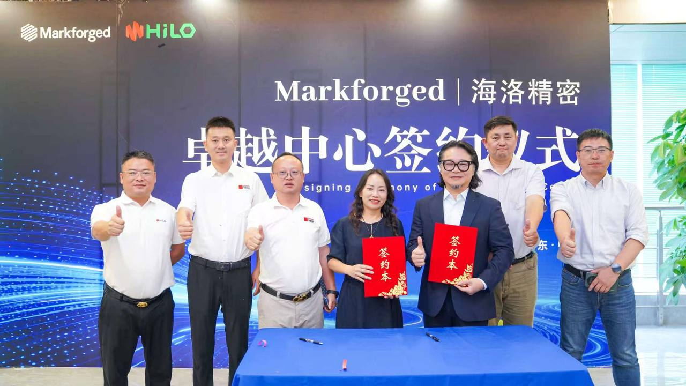
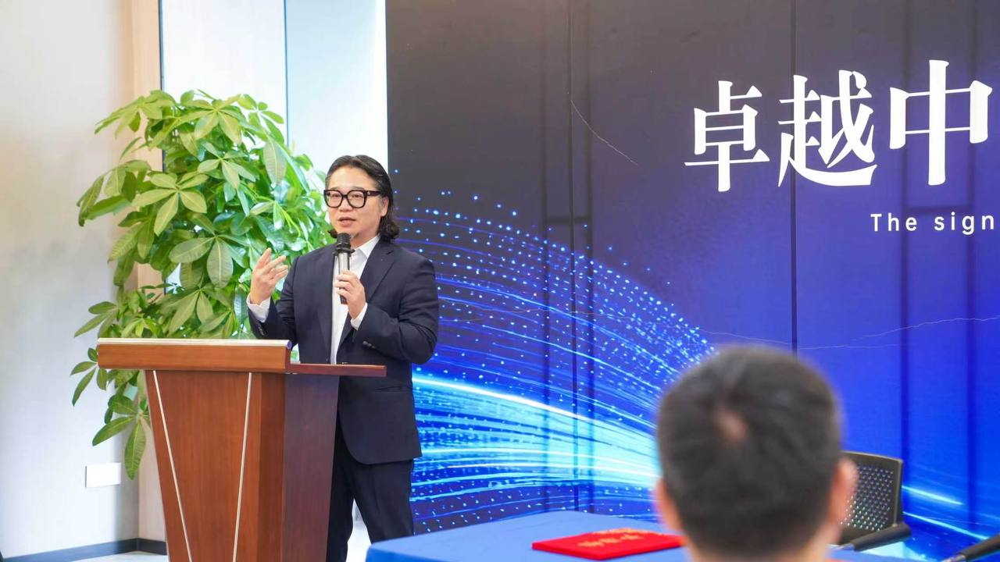

News & Insights

Markforged 與海洛精密在中山簽下華南卓越中心
海洛精密由捷程數控向凌云所設立，是專責經營 Markforged 業務的公司。捷程數控深耕走心機、車銑複合機與熱補償智能數控車床，在中山板芙擁有製造基地；以獨立公司承接增材製造業務，意味著這條線不是既有機床業務的附加項目，而是被當成一門要自己長大的生意來經營。
三場致辭反覆回到同一個命題：卓越中心不做設備展示窗口。
設備可以買，材料可以買，但一支懂得什麼時候該用什麼纖維走向、成形怎麼設計的團隊，是買不來的。
海洛精密研發總監 · 簽約儀式致辭
定位
不做展示窗口，做產業孵化平台
海洛精密總經理張宇在致辭中先替卓越中心定了調：中心不只是一個技術展示窗口，更是面向產業的創新孵化平台。他表示，增材製造突破了傳統機加工的設計桎梏，為輕量化、複雜構型與產品快速迭代提供新路徑，是高階裝備產業創新不可或缺的底層技術。
他並提出一個更具野心的目標：雙方合作不是裝置與技術的簡單引進，而是產業與生態的深度融合，期待依託華南卓越中心，共同重新定義碳纖維 3D 列印與金屬線材列印的中國標準。
在人才這一環，張宇的著墨與設備投資等重。他表示人才是高科技企業的根基，團隊裡每一個人或許並不完美，但要追求組織的完美。海洛精密的定位，是立志成為中國乃至世界最優秀的 3D 列印技術應用公司。
技術
從能做出來到值得依賴
海洛精密研發總監在技術致辭中提出一組數字：連續碳纖維 3D 列印市場，今年全球規模預計達 2.99 億美元，並以約 12% 的年複合成長率持續擴張。他將這個數字解讀為一個正在被驗證的產業判斷——連續碳纖維增材製造，正在從能做出來走向值得依賴。
在應用路徑上，海洛規劃從高價值、小批量、高客製的夾治具切入，再向性能件與成形件延伸，最終導入航空、汽車、機器人等領域的結構件。他並援引一個公開案例說明尺寸與強度的邊界已被推開：已有企業以連續纖維列印製造起飛重量達 136 公斤無人機的電機安裝座與機臂端，在滿足嚴苛體積要求的同時達到金屬級強度。
他認為這件事真正的意義，是工程師不再被形狀能不能銑出來或零件要多久才能交付所限制。
團隊
不是教會操作，而是教會判斷
研發總監花最多篇幅談的不是設備，而是團隊，並給出三層次路徑。第一層能打：熟練操作軟硬體。第二層會判斷：理解連續纖維的路徑邏輯，知道在什麼條件下該用何種纖維走向，也知道基材與碳纖維的協同邊界在哪裡。第三層能定義：與客戶團隊一起，從零件功能出發定義製造方案。
他的結論是：設備可以買，材料可以買，但一支團隊是買不來的，只能自己培養。海洛團隊培養的核心，不是教會操作，而是教會判斷。
在他的規劃裡，卓越中心對外要展示的也不是列印本身，而是一個零件從需求到交付的完整推進路徑——讓來訪的工程師看見這件事，並且從明天就可以開始做。
整合
減材與增材的整合，而不是取代
Markforged 大中華區與越南區總經理陳中欣在致辭中，先澄清了一個市場上常見的誤解：他不是要取代對方的減材製造，不是要取代 CNC，也不是要取代工具機——雙方是要合作，而減材與增材的整合，才是最好的路徑。
談到為何選擇這個合作對象，他給出三個理由：其一是對方在走心機與複合加工機領域的領導地位與持續成長；其二是理念相同，雙方都不做低價競爭，而是讓產品品質與價格相當；其三是團隊執行力——他提到每次到訪，廠區進度都與上次不同，空間已經隔好，效率之快不是領導者性急就能做到，而是整個團隊跟得上。
對於卓越中心，陳中欣列出五項目標：跨產業應用開發平台、專業製造服務平台、教育培訓、夾治具與檢具研發，以及媒體與產業推廣。他並指出，國內 3D 列印的應用層次仍有提升空間，更大的市場藏在進階應用——機器人、無人載具，以及工業製造的夾治具。
他將雙方合作的核心歸結為一句話：賣的不是 3D 列印設備，賣的是解決方案。並強調比設備投資更重要的是能力轉移——最重要的不是投資設備，而是讓合作方真正學會這套技術。
趨勢
AI 加速設計迭代，增材製造負責把它變成實體
談到技術趨勢，陳中欣提出AI 實體化的觀點：AI 大幅加速了虛擬世界裡的設計迭代，而把虛擬變成實體，正是增材製造的價值所在。在他的描述裡，客戶完成設計後直接匯入平台即可列印，省去傳統打樣在 CNC 排程與開模之間的取捨。
他並以自身觀察說明產業密度：2026 年 3 月的上海 TCT 展，參展的 3D 列印機廠商（含家用機）合計已超過 550 家。在這樣的競爭環境下，技術辨識度與應用深度成為區隔的關鍵。
連續纖維增強為 Markforged 的專利技術，透過在塑料基材中連續鋪放碳纖維，使列印件強度超越部分金屬材料，並具備可直接上線應用的精度與表面品質。
下一步
簽約只是一個動作
依雙方規劃，卓越中心後續將推進環境建設、教育培訓、市場推廣與聯合商機開發。陳中欣在致辭尾聲表示，合作意向書是一個開始，而不是到了某一個階段；接下來要往下一個階段推進。
海洛精密研發總監的結語則落在責任上：簽約只是一個動作，真正重要的是從這一天開始雙方共同承擔——要讓連續纖維列印不再只是一場先進技術展示，而是製造業可以依賴的生產工具。從工裝到飛行件，從一台設備到一支團隊，從一個案例到一個行業習慣。

來源與說明
- 本文為 Markforged 大中華區自行採寫的活動報導，內容取自 2026 年 9 月 22 日簽約儀式現場錄音與照片。
- 文中三段直接引言逐字對照現場錄音；市場數據與應用案例出自海洛精密研發總監致辭，非 Markforged 方數據。
- 現場照片：2026 年 9 月 22 日 廣東中山。